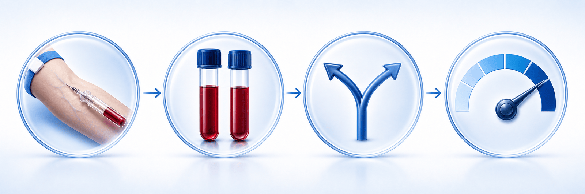
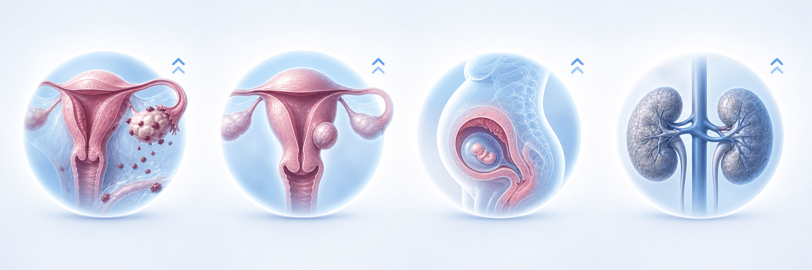
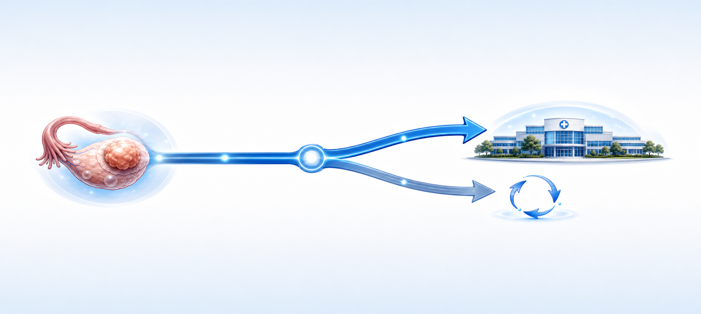

암을 확정하는 검사가 아니라 ‘어디서 진료받을지’를 정하도록 돕는 검사입니다
두 가지 혈액 표지자를 재고, 폐경 전·후에 따라 다른 계산식에 넣습니다

하나만으로는 부족해서 둘을 함께 봅니다
이미 발견된 난소 혹의 성격을 가늠하기 위한 검사입니다
기준값은 검사 장비·시약마다 다릅니다 — 검사한 곳의 기준을 따릅니다
| 검사 장비·시약 | 폐경 전 고위험 | 폐경 후 고위험 | 읽는 법 |
|---|---|---|---|
| Roche(Cobas · Elecsys) | 11.4% 이상 | 29.9% 이상 | 기준값 이상이면 고위험 |
| Abbott(Architect) | 약 7.4% 이상 | 약 25.3% 이상 | 장비마다 기준이 다름 |
고위험이 곧 암은 아니고, 저위험이 100% 안심도 아닙니다
이런 상황에서는 점수가 높게 나올 수 있어 미리 알려 주시면 해석에 도움이 됩니다

‘전문병원에서 볼지’ 정하는 신호입니다 — 이 순서로 진행합니다

검사 전에 알릴 것과 결과를 들을 때 기억할 것을 순서대로 모았습니다
무엇을 · 누가 · 어떻게 · 결과 뒤에 무엇을 하는지
| 질문 | 답 |
|---|---|
| 무엇인가요 | 난소 혹이 암일 가능성이 높은 편인지 가늠하는 혈액검사입니다 |
| 누가 받나요 | 난소 혹이 발견돼 수술이 계획됐고, 아직 부인암 전문의에게 의뢰되지 않은 만 18세 넘은 여성 |
| 어떻게 하나요 | 채혈 1회 → 두 표지자 + 폐경 상태로 점수 계산 |
| 결과는 | 기준값 이상이면 고위험 · 기준값은 장비·시약마다 다름 |
| 그다음은 | 고위험이면 전문병원 의뢰와 추가 영상 · 저위험이어도 필요하면 추적 |
QR을 스캔하면 같은 자료를 휴대폰에서 다시 열 수 있습니다